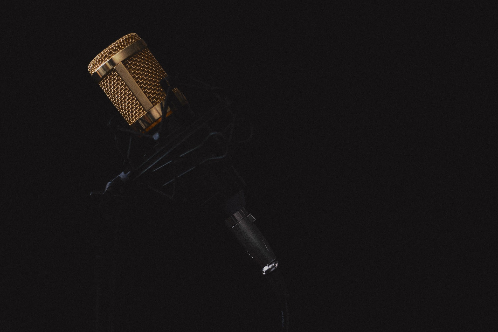
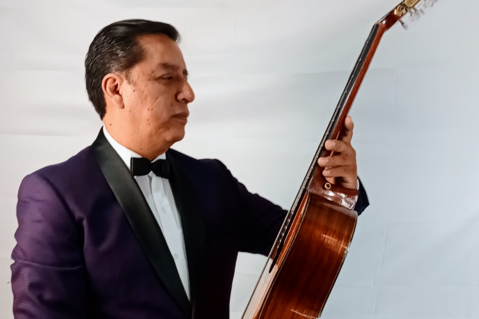
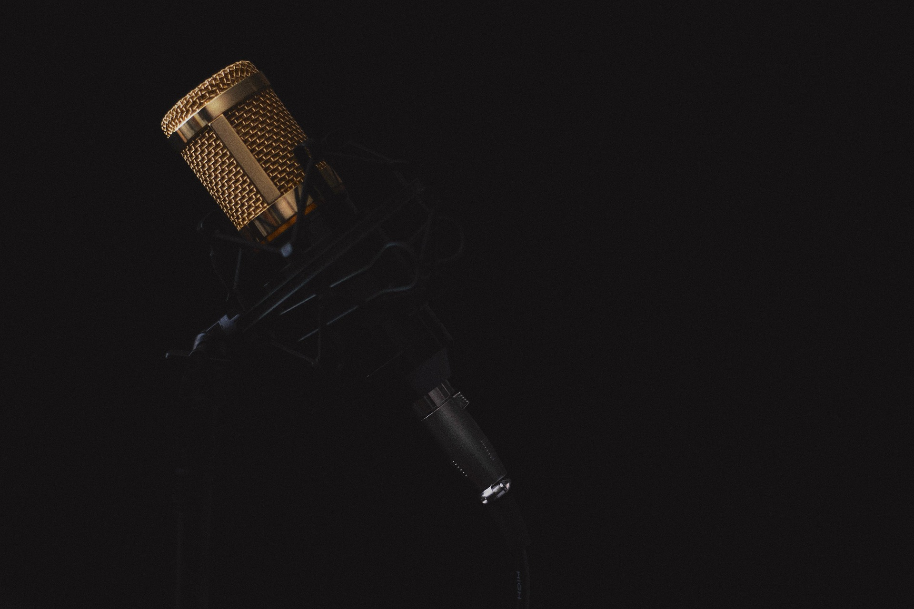
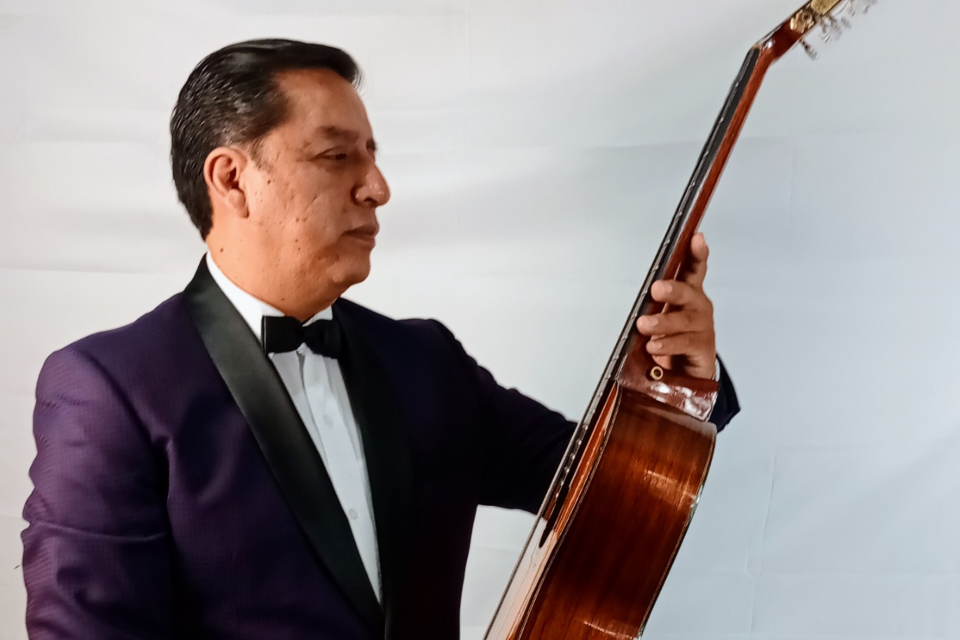

En México, ser artista independiente no significa crear desde la libertad, sino desde la trinchera. La independencia artística suele confundirse con autonomía, pero en realidad es un acto de resistencia ante un sistema cultural que invisibiliza a quienes no generan rentabilidad inmediata.
Roberto “Freizedo” Alvarado y Marco Antonio Chávez representan dos caras de esa misma lucha: el primero, desde la experimentación sonora del techno; el segundo, desde la nostalgia del bolero tradicional. Ambos crean con pasión, aunque sus contextos sean opuestos
Según Data México (Secretaría de Economía, 2025), la tasa de informalidad laboral para los artistas interpretativos alcanzó el 88.9 %, con un ingreso promedio mensual de $6,930 MXN. Además, El Economista (2023) señala que el 47.4 % de los trabajadores culturales en México carece de seguridad social o servicio médico. En este panorama, la independencia no se elige: se sobrevive.
Freizedo: energía, trance y búsqueda de identidad.
Freizedo, DJ y productor, comenzó en pequeñas fiestas con amigos: “Llevaba diez años asistiendo a eventos de techno y decidí hacerlo yo también”, recuerda. Hoy, su propuesta se mueve entre el sonido industrial y el trance continuo, buscando liberar al público a través de la música: “Busco generar sensaciones de libertad y que la gente se concentre solo en el sonido.”
En sus temas Grinberg y Hard Everyday, el artista combina percusiones metálicas y bajos envolventes que se entrelazan sin pausas, logrando un efecto hipnótico. Con Ableton Live manipula loops que simulan maquinaria urbana, mientras su teclado Arturia crea texturas frías que evocan fábricas en movimiento.
Freizedo ha publicado en el sello colombiano Avenue Recording y considera su presentación en una fábrica abandonada en Bogotá como su experiencia más inolvidable: “Fue increíble tocar para gente que pagó un boleto solo para escucharme; quería que valiera la pena su tiempo.”
Su nombre artístico proviene del pensador Salvador Freixedo, a quien admira por su libertad intelectual: “Es un homenaje a su pensamiento libre y contestatario.” Hoy, su mayor reto es sostener su carrera sin poder vivir de ella: “Mi trabajo mantiene mi carrera musical. Es doble esfuerzo y doble dedicación.”
Aunque ha publicado temas como Steel Pulse y No Signal en plataformas digitales, sus cifras modestas evidencian la dificultad de posicionar un proyecto sin presupuesto para promoción. En redes como SoundCloud e Instagram, mantiene una presencia constante pero limitada a un circuito de oyentes especializados. Freizedo encarna el impulso del artista que crea por rebeldía, pero su independencia lo condena a un público reducido.
Su sonido es potente, pero aún carece de una identidad plenamente definida que lo distinga dentro del saturado mundo del techno independiente. Su desafío no es técnico, sino simbólico: consolidar un estilo propio que trascienda fronteras sin perder autenticidad.
Aun así, su valor radica en su honestidad creativa. En un entorno donde la música suele responder a algoritmos, Freizedo representa a quienes crean para conectar, no para complacer
“Crear sin pedir permiso es la esencia del arte independiente. No buscamos encajar: buscamos expresar.”
Marco Antonio Chávez: el bolero como resistencia emocional.
Marco Antonio Chávez mantiene viva la esencia del bolero. “Mi tío cantaba en una sonora, y verlo tocar la guitarra me atrapó desde niño”, recuerda. Su debut, a los quince años, con el Trío Los Chávez en San Gregorio, marcó el inicio de una vida dedicada al romanticismo musical.
Entre sus influencias menciona a Julio Jaramillo, Fernando Fernández, Javier Solís, Los Bukis y Los Ángeles Negros. “Mientras exista el amor, el romanticismo jamás va a morir”, afirma con convicción.
En sus composiciones Camino al Recuerdo y Aún te Espero se percibe esa fidelidad al sentimiento. En la primera, canta:
“Camino al recuerdo, donde aún vive tu voz...”
Una imagen sencilla pero poderosa, donde el amor se convierte en un espacio tangible. Su lenguaje es directo, sin adornos innecesarios, lo que permite que el sentimiento llegue al oyente sin filtros
Una imagen sencilla pero poderosa, donde el amor se convierte en un espacio tangible. Su lenguaje es directo, sin adornos innecesarios, lo que permite que el sentimiento llegue al oyente sin filtros.
Chávez se ha presentado en festivales culturales y fue convocado por Gilberto Puente, fundador de Los Fantasmas, para un proyecto interrumpido por la pandemia. También participó en una grabación con un familiar del maestro Chamín Correa
El artista reconoce los desafíos de su época: “El bolero no es moderno, pero sigue vivo. El reto es adaptarlo a estas generaciones sin perder la esencia.” Por ello interpreta versiones de Luis Miguel o Cristian Castro, acercando el género a jóvenes que quizá nunca oyeron un trío tradicional.
Con humildad reflexiona: “Entre más sé, más me doy cuenta de que menos sé.” Y agrega: “Quiero ser recordado como una persona profesional, respetuosa y con buen humor, siempre dispuesto a aprender y aportar.”
Aunque su disciplina es admirable, su principal obstáculo es la falta de visibilidad en plataformas digitales y de apoyo institucional. Su desafío no es artístico, sino estructural: cómo mantener vivo un género en un mercado que privilegia la inmediatez
 



Dos caminos, una misma precariedad.
Aunque Freizedo y Chávez pertenecen a mundos opuestos —uno de máquinas y sintetizadores, el otro de guitarras y letras—, ambos enfrentan la misma realidad: crear sin respaldo y sobrevivir del arte.
Según Gaceta UNAM (2024), el 94.9 % de los compositores y arreglistas mexicanos trabaja en condiciones de informalidad. En México, ser independiente implica crear sin garantía, sin seguro médico y, muchas veces, sin público.
Freizedo mezcla beats en terrazas y fábricas; Chávez canta boleros en plazas y festivales locales. Dos escenas, un mismo pulso: la pasión por seguir haciendo arte pese al olvido institucional.
La música independiente no suena desde el éxito, sino desde la convicción. En el contraste entre el sintetizador y la guitarra, entre el trance y el suspiro, late el verdadero corazón cultural del país.
En un panorama donde el arte independiente en México sobrevive más por voluntad que por apoyo, Freizedo y Chávez muestran que la autenticidad no garantiza visibilidad, pero sí significado.
El primero, desde la experimentación electrónica, y el segundo, desde la nostalgia del bolero, revelan que la música no solo entretiene, sino que también resiste.
Ambos encarnan una misma pregunta que atraviesa a toda una generación de creadores: ¿cómo seguir produciendo arte en un país que no siempre escucha? Sus obras no buscan el éxito inmediato, sino dejar constancia de que, incluso desde los márgenes, la música sigue siendo una forma de existencia y memoria colectiva.